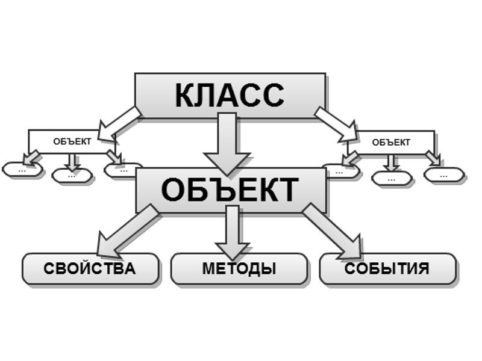

Объектно-ориентированное программирование
Ссылка на полную статью находится здесь.
Объектно-ориентированное программирование (сокр. ООП) — методология или стиль программирования на основе описания типов/моделей предметной области и их взаимодействия, представленных порождением из прототипов или как экземпляры классов, которые образуют иерархию наследования.
Идеологически, ООП — подход к программированию как к моделированию информационных объектов, решающий на более высоком абстрактном уровне основную задачу структурного программирования — структурирование информации с точки зрения управляемости. Это позволяет управлять самим процессом моделирования и реализовывать крупные программные проекты.
Управляемость для иерархических систем предполагает минимизацию избыточности данных (аналогичную нормализации) и их целостность, поэтому созданное удобно управляемым — будет и удобно пониматься. Таким образом, через тактическую задачу управляемости решается стратегическая задача — транслировать понимание задачи программистом в наиболее удобную для дальнейшего использования форму.

Методология ООП развивает и расширяет принципы объектного программирования.
Основные принципы структурирования в случае ООП связаны с различными аспектами базового понимания предметной задачи, которое требуется для оптимального управления соответствующей моделью:
- абстрагирование выделяет существенные характеристики некоторого объекта, отличающие его от всех других видов объектов и, таким образом, четко определяет его концептуальные границы с точки зрения наблюдателя
- инкапсуляция — это процесс отделения друг от друга элементов объекта, определяющих его устройство и поведение; инкапсуляция служит для того, чтобы изолировать контрактные обязательства абстракции от их реализации
- иерархия в виде наследования (генерализации) — такого отношения между классами (отношение родитель/потомок), когда один класс заимствует, а также расширяет и/или специализирует (уточняет) структуру и функциональный контракт одного или нескольких родительских классов
модульность — это свойство системы, которая была разложена на внутренне связные, но слабо связные между собой модули
Без следования любому из этих принципов модель не будет объектно-ориентированной.
То есть фактически речь идёт о прогрессирующей организации информации согласно первичным семантическим критериям: «важное/неважное», «ключевое/подробности», «родительское/дочернее», «единое/множественное». Прогрессирование, в частности, на последнем этапе даёт возможность перехода на следующий уровень детализации, что замыкает общий процесс.
Дополнительные свойства системы.
- типизация — это способ защититься от использования объектов одного класса вместо другого, или по крайней мере управлять таким использованием.
- виртуальный полиморфизм — при динамическом связывании указатель (или ссылка) могут ссылаться на объект любого типа совместимого по иерархии наследования с типом указателя или ссылки соответственно
- параллелизм — это свойство, отличающее активные объекты от пассивных; параллелизм в объектно-ориентированном программировании, как и другие принципы, возник не на пустом месте, а явился результатом привнесения объектной идеи в теорию параллельных вычислений
- сохраняемость — это способность объекта существовать во времени, переживая породивший его процесс, и (или) в пространстве, перемещаясь из своего первоначального адресного пространства
Обычный человеческий язык в целом отражает идеологию ООП, начиная с инкапсуляции представления о предмете в виде его имени и заканчивая полиморфизмом использования слова в переносном смысле, что в итоге развивает выражение представления через имя предмета до полноценного понятия-класса.